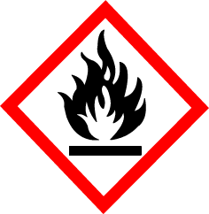
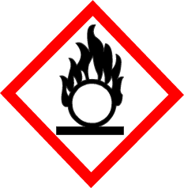
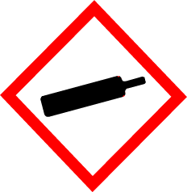
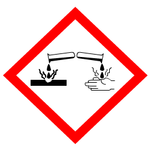
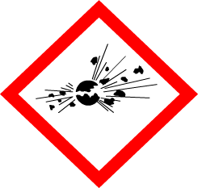
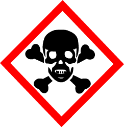
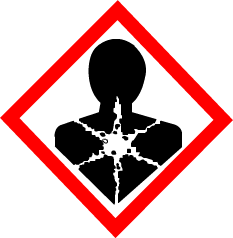
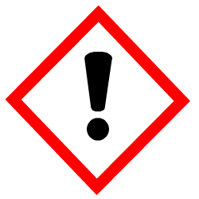
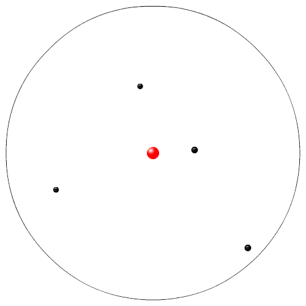
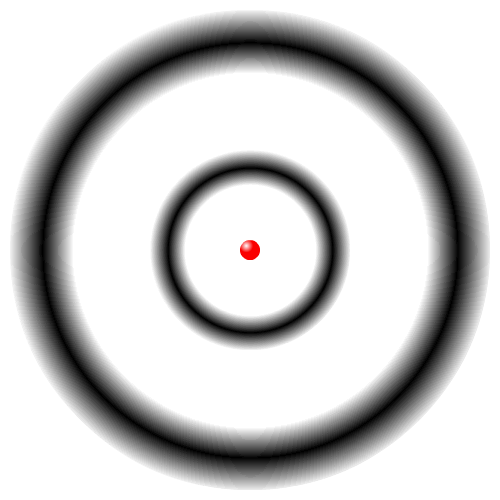

SCIENCE 10
UNIT A: ENERGY AND MATTER IN CHEMICAL CHANGE
SCIENCE 10
Program of Studies
SCIENCE 10
Program of Studies
Unit A: Energy and Matter in Chemical Change (Nature of Science Emphasis)
Overview: Chemical changes involve energy and transformations of matter. A knowledge of the underlying structure of matter and the basic chemical species is important in understanding chemical changes. As students explore the properties of molecular and ionic compounds, including acids and bases, they begin to appreciate the need for a classification scheme and a system of nomenclature. Students classify, name compounds and write balanced chemical equations to represent chemical changes. As well, students are introduced to the law of conservation of mass and the mole concept.Links to Science
The following science concepts are related to the content of Unit A. Concepts- particle model of matter - Grade 7 Science, Unit C: Heat and Temperature
- WHMIS symbols, pure substances, mixtures and solutions - Grade 8 Science, Unit A: Mix and Flow of Matter
- reactants, products, conservation of mass, periodic table, elements, compounds, atomic theory, chemical nomenclature - Grade 9 Science, Unit B: Matter and Chemical Change
- acids and bases - Grade 9 Science, Unit C: Environmental Chemistry
- How has knowledge of the structure of matter led to other scientific advancements?
- How do elements combine?
- Can these combinations be classified and the products be predicted and quantified?
- Why do scientists classify chemical change, follow guidelines for nomenclature and represent chemical change with equations?
Key Concepts
The following concepts are developed in this unit and may also be addressed in other units at other grade/course levels. The intended level and scope of treatment is defined by the outcomes below.- how chemical substances meet human needs
- Workplace Hazardous Materials Information System (WHMIS) and safe practices
- International Union of Pure and Applied Chemistry (IUPAC) nomenclature, ionic and molecular compounds, acids and bases
- evidence of chemical change
- role and need for classification of chemical change
- writing and balancing equations
- law of conservation of mass and the mole concept
Outcomes for Science, Technology and Society (STS) and Knowledge
Students will:- 1. Describe the basic particles that make up the underlying structure of matter, and investigate related technologies
- identify historical examples of how humans worked with chemical substances to meet their basic needs
(e.g., how precontact First Nations communities used biotic and abiotic materials to meet their needs)
- outline the role of evidence in the development of the atomic model consisting of protons and neutrons (nucleons) and electrons; i.e., Dalton, Thomson, Rutherford, Bohr
- identify examples of chemistry-based careers in the community
(e.g., chemical engineering, cosmetology, food processing)
- Explain, using the periodic table, how elements combine to form compounds, and follow IUPAC guidelines for naming ionic compounds and simple molecular compounds
- illustrate an awareness of WHMIS guidelines, and demonstrate safe practices in the handling, storage and disposal of chemicals in the laboratory and at home
- explain the importance of and need for the IUPAC system of naming compounds, in terms of the work that scientists do and the need to communicate clearly and precisely
- explain, using the periodic table, how and why elements combine to form compounds in specific ratios
- predict formulas and write names for ionic and molecular compounds and common acids
(e.g., sulfuric, hydrochloric, nitric, ethanoic) , using a periodic table, a table of ions and IUPAC rules
- classify ionic and molecular compounds, acids and bases on the basis of their properties; i.e., conductivity, pH, solubility, state
- predict whether an ionic compound is relatively soluble in water, using a solubility chart
- relate the molecular structure of simple substances to their properties
(e.g., describe how the properties of water are due to the polar nature of water molecules, and relate this property to the transfer of energy in physical and living systems)
- outline the issues related to personal and societal use of potentially toxic or hazardous compounds
(e.g., health hazards due to excessive consumption of alcohol and nicotine; exposure to toxic substances; environmental concerns related to the handling, storage and disposal of heavy metals, strong acids, flammable gases, volatile liquids)
- Identify and classify chemical changes, and write word and balanced chemical equations for significant chemical reactions, as applications of Lavoisier’s law of conservation of mass
- provide examples of household, commercial and industrial processes that use chemical reactions to produce useful substances and energy
(e.g., baking powder in baking, combustion of fuels, electrolysis of water into H2(g) and O2(g))
- identify chemical reactions that are significant in societies
(e.g., reactions that maintain living systems, such as photosynthesis and respiration; reactions that have an impact on the environment, such as combustion reactions and decomposition of waste materials)
- describe the evidence for chemical changes; i.e., energy change, formation of a gas or precipitate, colour or odour change, change in temperature
- differentiate between endothermic and exothermic chemical reactions (e.g.,combustion of gasoline and other natural and synthetic fuels, photosynthesis)
- classify and identify categories of chemical reactions; i.e., formation (synthesis), decomposition, hydrocarbon combustion, single replacement, double replacement
- translate word equations to balanced chemical equations and vice versa for chemical reactions that occur in living and nonliving systems
- predict the products of formation (synthesis) and decomposition, single and double replacement, and hydrocarbon combustion chemical reactions, when given the reactants
- define the mole as the amount of an element containing 6.02 × 1023 atoms (Avogadro’s number) and apply the concept to calculate quantities of substances made of other chemical species (e.g., determine the quantity of water that contains 6.02 × 1023 molecules of H2O)
- interpret balanced chemical equations in terms of moles of chemical species, and relate the mole concept to the law of conservation of mass
Skill Outcomes
(focus on scientific inquiry)Initiating and Planning
Students will:Ask questions about observed relationships, and plan investigations of questions, ideas, problems and issues
- define and delimit problems to facilitate investigation
- design an experiment, identifying and controlling major variables
(e.g., design an experiment to differentiate between categories of matter, such as acids, bases and neutral solutions, and identify manipulated and responding variables)
- state a prediction and a hypothesis based on available evidence and background information
(e.g., state a hypothesis about what happens to baking soda during baking)
- evaluate and select appropriate instruments for collecting evidence and appropriate processes for problem solving, inquiring and decision making
(e.g., list appropriate technology for classifying compounds, such as litmus paper or conductivity tester)
Performing and Recording
Students will:Conduct investigations into relationships between and among observable variables, and use a broad range of tools and techniques to gather and record data and information
- carry out procedures, controlling the major variables and adapting or extending procedures
(e.g., when performing an experiment to illustrate conservation of mass, demonstrate an understanding of closed and open systems and control for loss or gain of matter during a chemical change)
- use library and electronic research tools to collect information on a given topic
(e.g., information on compounds we use and their toxicity, using standard references, such as the Merck Index, as well as Internet searches)
- select and integrate information from various print and electronic sources or from several parts of the same source
(e.g., collect information on research into subatomic matter, research how pre-contact First Nations communities used available materials such as brain tissue for tanning hides)
- demonstrate a knowledge of WHMIS standards by selecting and applying proper techniques for the handling and disposal of laboratory materials
(e.g., recognize and use Material Safety Data Sheets [MSDS] information)
- select and use apparatus, technology and materials safely
(e.g., use equipment, such as Bunsen burners, electronic balances, laboratory glassware, electronic probes and calculators correctly and safely)
Analyzing and Interpreting
Students will:Analyze data and apply mathematical and conceptual models to develop and assess possible solutions
- describe and apply classification systems and nomenclature used in the sciences
(e.g., investigate periodicity in the periodic table, classify matter, and name elements and compounds based on IUPAC guidelines)
- apply and assess alternative theoretical models for interpreting knowledge in a given field
(e.g., compare models for the structure of the atom)
- compare theoretical and empirical values and account for discrepancies
(e.g., measure the mass of a chemical reaction system before and after a change, and account for any discrepancies)
- identify and explain sources of error and uncertainty in measurement, and express results in a form that acknowledges the degree of uncertainty
(e.g., measure and record the mass of a material, use significant digits appropriately)
- identify new questions or problems that arise from what was learned
(e.g., how did ancient peoples discover how to separate metals from their ores?; evaluate the traditional Aboriginal method for determining alkaline properties of substances)
Communication and Teamwork
Students will:Work as members of a team in addressing problems, and apply the skills and conventions of science in communicating information and ideas and in assessing results
- communicate questions, ideas and intentions; and receive, interpret, understand, support and
respond to the ideas of others
(e.g., use appropriate communication technology to elicit feedback from others)
- represent large and small numbers using appropriate scientific notation
- select and use appropriate numeric, symbolic, graphical and linguistic modes of representation to communicate ideas, plans and results
(e.g., use appropriate Système international (SI) units, and IUPAC nomenclature)
Attitude Outcomes
Interest in ScienceStudents will be encouraged to:
Show interest in science-related questions and issues, and confidently pursue personal interests and career possibilities within science-related fields
(e.g., apply concepts learned in the classroom to the everyday use of chemicals; show interest in a broad scope of chemistry-related careers)
Mutual Respect
Students will be encouraged to:
Appreciate that scientific understanding evolves from the interaction of ideas involving people with different views and backgrounds
(e.g., recognize the contributions of Canadians to contemporary knowledge of the structure of matter; show awareness of and respect for traditional Aboriginal knowledge about the use of biotic and abiotic materials)
Scientific Inquiry
Students will be encouraged to:
Seek and apply evidence when evaluating alternative approaches to investigations, problems and issues
(e.g., evaluate inferences and conclusions based on particles of matter that cannot be observed directly)
Collaboration
Students will be encouraged to:
Work collaboratively in planning and carrying out investigations, as well as in generating and evaluating ideas
(e.g., contribute to group work willingly, assume a variety of roles and accept responsibility for any problems that arise)
Stewardship
Students will be encouraged to:
Demonstrate sensitivity and responsibility in pursuing a balance between the needs of humans and a sustainable environment
(e.g., recognize that environmental consequences may arise from the development, use and disposal of chemical materials)
Safety
Students will be encouraged to:
Show concern for safety in planning, carrying out and reviewing activities
(e.g., acknowledge the need for regulations to govern the storage, handling and disposal of potentially hazardous materials in the school laboratory and at home or in the workplace)
Links to Mathematics
The following mathematics outcomes are related to the content of Unit A but are not considered prerequisites.- Data Collection and Analysis - Grade 9 Mathematics, Statistics and Probability (Data Analysis), Specific Outcome 3
- Measurement and Unit Conversions - Mathematics 10C, Measurement,Specific Outcome 2; Mathematics 10-3, Measurement, Specific Outcome 1;Mathematics 20-3, Algebra, Specific Outcome 3; Mathematics 30-3, Measurement, Specific Outcome 1
- Ratio and Proportions - Grade 8 Mathematics, Number, Specific Outcomes 3, 4 and 5
- Graph Analysis - Mathematics10C, Relations and Functions, Specific Outcomes 1 and 4;Mathematics 20-3, Statistics, Specific Outcome 1
- Powers - Mathematics10C, Algebra and Number, Specific Outcome 3
Unit Focus Questions
- How has knowledge of the structure of matter led to other scientific advancements?
- How do elements combine? Can these combinations be classified and the products be predicted and quantified?
- Why do scientists classify chemical change, follow guidelines for nomenclature and represent chemical change with equations?
Chapter A1.0 The understanding that particles make up the underlying structure of matter has led to advancements in technology
Key Concepts
- Workplace Hazardous Materials Information System (WHIMIS) and safe practices
- Evidence of chemical change
- How chemical substances meet human needs
Learning Outcomes
- Illustrate an awareness WHMIS guidelines, and demonstrate safe pracitices guidelines, and demonstrate safe practices in handling, storing, and disposing of chemicals in the laboratory and at home.
- Provide examples of how early humans worked with chemical substances to meet their basic needs
- Outline the role of evidence in the development of the atomic model consisting of nucleons (protons and neutrons) and electrons through the work of Dalton, Thomson, Rutherford, and Bohr.
- Describe evidence for chemical change.
A1.1 Safety in the Laboratory
Understanding the Rules
- Read all written instructions carefully before doing an activity.
- Listen to all instructions and follow them carefully.
- Wash your hands thoroughly after each activity and after handling chemicals.
- Wear safety goggles, gloves, or an apron as required.
- Think before you touch. Equipment may be hot and substances may be dangerous.
- Never pour liquids into containers held in your hand. Place a test tube in a rack before pouring substances into it.
- Clean up any spilled substances immediately as instructed by your teacher.
- Never look into test tubes or containers from the top. Always look in through the side.
- Never use cracked or broken glassware. Make sure you follow your teacher's instructions when getting rid of broken glass.
- Label any container you put chemicals in.
- Report all accidents and spills immediately to your teacher.
- Read the WHMIS safety symbols on any chemical you will be using and make sure that you understand all the symbols.
- Always carry things carefully!
Wine merchant William Sokolin had paid $30 for a 1787 bottle of Chateau Margaux once owned by Thomas Jefferson. He presented it before a group of 300 wine collectors at Manhattan's Four Seasons restaurant in 1989, hoping that one of them might offer $519 000 for it. Before bidders could get out their checkbooks, he dropped the bottle and broke it.
Source: S. Roberts (2 May 2015) New York Times retrieved from: https://www.nytimes.com/2015/05/03/nyregion/william-sokolin-wine-seller-who-broke-famed-bottle-dies-at-85.html?_r=0
Source: S. Roberts (2 May 2015) New York Times retrieved from: https://www.nytimes.com/2015/05/03/nyregion/william-sokolin-wine-seller-who-broke-famed-bottle-dies-at-85.html?_r=0
Safety Hazard Symbols
WHMISWorkplace Hazardous Materials Information System is used to indicate hazards. Required training at worksites involving chemicals. Workers and employers share responsibility.
| Name | Pictograph | Description |
|---|---|---|
| Flammable (inflammable) |  | These materials can burn. Keep them away from heat sources and flames. |
| Oxidizing material |  | These materials will release oxygen and help combustion. Should NOT be stored with flammables. |
| Compressed gas |  | These need to be stored upright because damage can cause the tank to fly as a very high speed projectile. |
| Corrosive |  | Mostly acids or bases that will react corrosively with flesh and metals. Wear gloves, lab coat (apron), proper footwear and respirator if there are strong fumes; depending on the strength of the corrosive. |
| Explosives |  | These materials can explode or are extremly sensitive and react quickly. Generally require specific training. |
| Poisonous |  | Depending on the source it can be poisonous by ingesting (eating or drinking); inhalation (breathing) or contact. Don't eat or drink, use a mask and gloves as appropriate. |
| Health effect |  | These materials can affect your respiratory system or can affect a specific organ. Check MSDS for details. Use an appropriate mask. |
| Acute Toxic effect |  | These materials cause a variety of poisonous or negative health effects. Chech the MSDS for details. |
| Biohazardous infectious |  |
Commonly seen in hospitals with waste. These materials can spread disease due to bodily fluids. Use gloves and look out for sharps (needles, scapel blades, broken glass, etc...) |
| Enviromental hazard |  |
These materials can negatively affect nature. For example: small amounts of crude oil will poison thousands of litres of water for fish and other animals. These materials must be conained and disposed of according the local legislation |
Material Safety Data Sheets (MSDS)
MSDS contain safety and chemical information that is useful for the chemical's users and for first responders and hazardous cleanup teams. The MSDS must be stored in an easy to access location where ever they are stored. That includes during transportation. Some of the information they conatin are:- Protective Clothing symbols
- Chemical Name and formula
- Synonym - other slang or common names or short forms
- Emergency numbers for dealing with large spills
- Emergency procedures for: contact with skin or eyes, ingestion, inhalation etc...
You are responsible for your safety and actions. Only you can protect yourself from other people's accidents hurting you.
Environmental Safety
Always dispose of chemicals properly. Whatever you pour down the drain goes into our waterways. Most wastewater and water treatment plants are not designed to remove chemicals, so those chemicals will pass into our drinking water system..
A1.2 Properties and Classification of Matter
Properties Used to Classify Substances
Physical properties - properties that describe the physical appearance and composition of a substance. Ie. what you can see and physically determine.- Boiling point or condensing point - the temperature that the material changes state from liquid to vapour or vice versa. Ex. Water boils at 100oC.
- Melting point or freezing point - the temperature that the material changes state from solid to liquid or vice versa. Ex. Water freezes at 0oC.
- Malleability - the ability to beat or roll the material into a flat sheet. Ex. Aluminum is very malleable (aluminum foil) whereas glass is not malleable.
- Ductility - the ability to stretch a material without breaking. Ex. copper is very ductile, whereas concrete is not.
- Colour - the color Ex. water is colourless, gold is yellow, aluminium is silver.
- State - whether the material is a solid, liquid, or gas, normally at room temperature.
Ex. nitrogen is a gas, water is a liquid and iron is a solid. - Solubility - whether the material dissolves normally in water. Ex. Sugar has a high solubility in water (you can dissolve a lot), wood has a very low solubility in water (wood doesn't dissolve).
- Crystal formation - the shape of the crystalline structure of the material. Ex. Water ice forms hexagonal (6 sided) crystals (snowflakes), sodium chloride (table salt) forms cubic crystals.
- Conductivity - how well the material allows heat or electricity to pass through it. Ex. Copper has a high conductivity, plastic has a low conductivity.
- Magnetism - how well the object holds a magnetic field. Ex. Iron, cobalt and nickel can be magnetic, aluminum cannot be magnetic.
Chemical Properties
Chemical properties - properties that describe the reactivity of a substance. Ie. results from quick and easy chemical reaction tests.- Ability to burn - whether or not the material will combust. Ex. Oil burns, whereas sand does not.
- Flash point - temperature at which the material spontaneously combusts. Ex. Gasoline has a lower flash point than diesel fuel.
- Reaction with water - whether or not the material will dissolve or corrode in water. Ex. sugar dissolves in water, iron corrodes in water
- Reaction with acids and bases - whether or not the material will corrode or form a gas. Ex. Magnesium creates hydrogen gas bubbles in acid. Iron will corrode in acid.
- Reaction to heat - whether the material will melt or decompose when heated. Ex. Mozzarella cheese melts when heated, malachite (green copper ore, Cu(OH)2· CuCO3) decomposes into copper (II) oxide (copper metal), carbon dioxide and water during ore processing.
- Reaction to chemical indicators - chemical indicators are chemicals that change colour due to a chemical reaction and are used to identify materials. Ex. Litmus paper turns red with acids and blue with bases.
Pure Substances and Mixtures
Pure substance - substance in which all the particles are the same. Ex. Pure gold is 99.999% gold atoms.Mixture - combination of pure substances. Ex. Air is a mixture of 79% nitrogen gas, 19% oxygen gas, 2% carbon dioxide.
Mechanical mixture - Mixture in which the different substances are visible. Ex. Marbles in sand.
Heterogeneous mixture - Mixture in which the different substances are visible.
Suspension - Mechanical mixture in which the components are in different states. Ex. Milk.
Colloid - Mechanical mixture in which the suspended substance cannot be easily separated from the other substances in the mixture.
Homogeneous mixture - Mixture in which the different substances are not visible.
Solutions - Mixture in which the separate components are not visible. Ex. salt water, you can only see the water, the salt is dissolved and invisible.
Chemical Reactions
Chemical reaction - process that occurs when a substance or substances react to form a different substance or substancesRecognizing Chemical Reactions
In a chemical reaction atoms change what they are bound to. When carbon burns it chemically reacts with oxygen to produce carbon dioxide. The single carbon atom reacts with a pair of oxygen atoms that are bound together. The carbon binds onto the two oxygen atoms to form a three atom molecule.There are some indicators that a chemical reaction occurred:
- The substance changed colour. Ex. Rusting iron changes from a silver colour to red.
- The substance changed state. Ex. Burning wood releases smoke and gases.
- Bubbles showed the release of a gas. Ex. Sodium in water releases bubbles.
- The substance changed temperature. Ex. Cold pack gets cold when the chemicals are mixed.
- A new substance is formed. Ex. Nylon plastic is made by mixing two clear colourless liquids.
.
A1.3 Developing Ideas about Matter
Food Chemistry
Heating and Freezing.Heating sterilizes food products by killing the bacteria that causes food to rot. Cooking meat kills the bacteria on the surface. Hamburger must be thoroughly cooked because bacteria could be on all of the ground surfaces. Steaks only need to be surface cooked because there is no internal bacteria that is dangerous. Lots of restaurant will not serve steak blue rare for safety reasons. Only eat steak tartar at a good quality restaurant. DO NOT make your own! Freezing does not kill bacteria, but it freezes all of the water that the bacteria need to break down the food. The bacteria simply wait until the food is defrosted. Food can be preserved for multiple years by freezing.
Salting
The salt is used to dehydrate the food by putting the food cells in a hypotonic situation. The bacteria are also dehydrated and killed. This was used before freezing became practical in the 1900s.
Fermentation and Pickling
Pickling uses bacteria called lactobacilli to convert sugar into lactic acid that prevents the growth of bacteria that cause food to rot and decay. Fermenting is best known for producing alcohol from sugars.
Metallurgy - an Early Branch of Chemistry
Early civilizations discovered that they could make tools out of metal deposits found on the ground. As early as 4000 B.C. copper was the initial metal commonly used. Copper was used because it is soft and easy to make into tools with just rocks and wood to work with. As copper technology improved people discovered that mixing copper with other metals would produce different metal alloys.
Mixing copper with tin produced a metal alloy called bronze which was stronger and more rigid than pure copper. This led to the bronze age around 2500 B.C. With stronger and better tools, different cultures experimented with different metals, alloys, mining and refining techniques.
The iron age started around 1200 BC. when smelting processes were developed. Smelting is heating iron ore (iron mixed with rock) to melt and separate the iron. Since iron is much stronger than bronze it became a new preferred metal for things like armour and weapons.
Aristotle's Description of Matter
Around 400 B.C. Aristotle, a Greek philosopher, believed that all matter was composed of the four elements: fire, earth, water and air.Democritus, another Greek, proposed that matter was made up of tiny particles that could not be divided into smaller pieces. He called the particles atomos which is Greek for invisible.
However, the philosophers did not attempt to test their ideas by systematic experimentation. They preferred to observe nature and derive theories from observations.
Ex.Tree = Fire, Water, Earth Dried Wood = Fire, Earth Ashes = Earth
Alchemy
With the fall of the Greek and Roman empires, chemistry was carried out by a group called alchemists. Alchemy was a combination of science, magic and tricks. Alchemists are famous for trying to get rich by trying to change lead and other metals into gold. Alchemists discovered many important facts and developed better equipment, but did not cooperate so ideas didn't spread. The same work was repeated over and over by different alchemists. Towards the 1500s the study of alchemy led to chemistry.
Developing Hypotheses about Matter
As chemistry was developed into a systematic experimental based science, theories developed about what matter is made of. Democritus' ideas were the foundation for models of the atom. Over time different experiments have some more and more details of the atom, and theories have adjusted accordingly.
| John Dalton Model | |
 |
John Dalton was an English chemist who based his model of the atom on experiments he did in combining elements. His theory of the atom was: All matter is made of small, indivisible particles called atoms
|
| J.J. Thomson Model | |
 |
JJ Thomson was an English physicist who discovered a very tiny particle called the electron. He showed that a beam of electrons can be generated from any material. He measured the properties of the electron by using magnetic and electric fields. This is sometimes called the raison bun or plum pudding model. The raisons (plums) are the negative electrons embedded in the positive dough (pudding).
|
| Ernest Rutherford Model | |
|  | Rutherford, while working at McGill University in Montreal, performed experiments with radioactive particles. He used radioactive polonium to shoot sub atomic high speed alpha particles at a very thin piece of gold foil. He expected the alpha particles to go zipping in between the Dalton atoms. Instead a few atoms were deflected. From his experiment he proposed a new model of the atom. This is sometimes called the planetary model (the electrons are like the planets going in circles around the nucleus, the sun).
|
| Neils Bohr Model | |
 |
Neils Bohr was a Danish physicist. He examined the light emitted from elemental gases when electricity is run through the gas. The Rutherford model did not explain why these elemental gases give of very specific colours of lights. Bohr proposed that the orbiting electrons in the Rutherford model can only orbit in specific locations, called energy levels or shells. When electrons gained electrical energy they jumped up shell levels, and then fell down releasing energy in the form of light. This is the most commonly used model in movies and animations.
|
| The Quantum Mechanical Model of the Atom | |
|  |
|
Program of Studies
Alberta Science 10
Program of Studies

Alberta Science 10
Program of Studies
Contact me:
BCHS Barrhead AB
Steven Montgomery
steven.montgomery@pembinahills.caBCHS Barrhead AB
Textbook
Addison Wesley Science 10 Textbook

Addison Wesley Science 10 Textbook